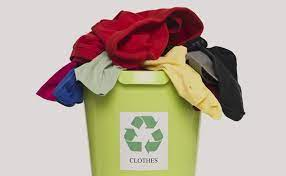

Used Clothes Recycling
Regarding environmental protection activities, we are aware of the Community Used Clothes Recycling Bin Scheme in the public service of the Home Affairs Department, and we also offer related schemes. First of all, we need to know the standard of used clothes recycling. First, acceptable clothes are clean clothes, whether they are new or second-hand, shoes, handbags or backpacks, dolls, accessories. Items that are not suitable for donation include damaged and unclean clothing, furniture, uniforms, curtains, second-hand mattresses or bedding, second-hand underwear, towels, socks and other intimate clothing, and fur products. Second, before donating clothes, please keep them clean and tidy, clean and wrap them first. Remember to check to see if there are any personal items left in the clothes you intend to donate. We will regularly collect the clothes in the old clothes recycling box. We also provide door-to-door recycling services. If you have a large amount of clothes to be recycled, you can contact us directly to learn more.